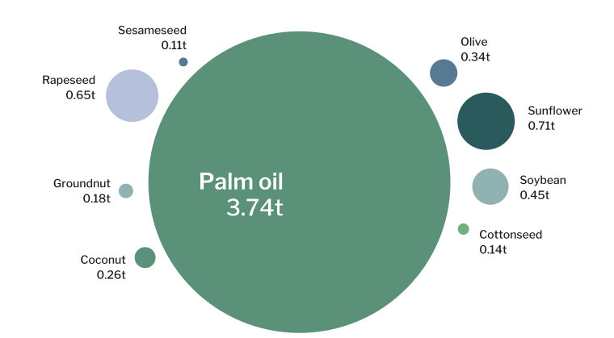

If you have ever tried to avoid consuming palm oil, chances are—you haven't. This ubiquitous product derived from the oil palm tree is found in roughly half of all packaged goods, from chocolate and cleaning agents to biofuels and bread.
Oil palm is relatively cheap, versatile, and efficient to produce, prompting a rise in global production since the 1970s. While it is cultivated in over 40 countries—Indonesia and Malaysia generate approximately 85% of the entire supply.
Zoom on a specific range of time by dragging the mouse. Double-click to zoom out.
Highlight a specific group by hovering the legend.
Source: Our World in Data
The proliferation of industrial and smallholder plantations has come at widespread environmental costs. Producers looking to expand production have encroached upon tropical forests and other habitats, releasing carbon dioxide and other greenhouse gases into the atmosphere.
Source: World Resources Institute
In Southeast Asia, oil palm cultivation has degraded tropical peatlands, swampy ecosystems that store as much as 28 times more carbon than forests. When drained, peatlands release large amounts of carbon dioxide and other greenhouse gases into the atmosphere.
Notes: Average carbon dioxide (CO2) emissions and its equivalents for methane (CH4) and nitrous oxide (N2O) are shown. Forest emissions are shown in terms of overall soil respiration (Rs).
Source: Cooper, H., Evers, S., Aplin, P. et al., "Greenhouse gas emissions resulting from conversion of peat swamp forest to oil palm plantation," Nat Commun, 2020.
The degradation of forests to make room for plantations has also threatened hundreds of species, including orangutans, gibbons, and the Sumatran tiger. In fact, the International Union for the Conservation of Nature (IUCN) Red List of Threatened Species documents 301 species for which oil palm is a reported threat, more than for other oil crops.
Source: International Union for the Conservation of Nature
As global awareness of the environmental impacts of oil palm production increases, governments and corporations have come under pressure to find alternatives, going as far as boycotting palm oil entirely. This move could lead to greater environmental consequences for the planet, as it would likely shift demand to less productive oils like rapeseed (i.e., canola), sunflower, and soybean oil.

Notes: Yield is measured as tons of oil produced per hectare of land used.
Source: Our World in Data and UN Food and Agriculture Organization (FAO)
To replace the world’s growing demand for palm oil through alternative
vegetable oils would require substantially more land—and threaten more habitats,
species, and communities. This is not to say that the status quo is tenable but
rather that the world should focus on the
increased sustainability of oil palm cultivation. One possible response is to increase market demand
for palm oil certified by the Roundtable on Sustainable Palm Oil (RSPO),
which currently comprises only 19% of the global market.
Established in 2004 by civil society organizations and industry representatives,
the RSPO develops environmental and social criteria that minimize the negative
effects of oil palm production.
Since its inception, however, the RSPO has garnered criticism around weak standards,
limited enforcement, and a lack of sanctioning for non-compliance. Several studies,
for example, note that palm oil certified by the RSPO is skewed toward plantations
in areas with few remaining forests—making them more likely to meet “no deforestation” targets.
To optimize sustainability objectives, the RSPO should develop clear, quantitative targets,
measure performance relative to baseline conditions, and leverage remote sensing technology
for better monitoring and compliance. Such changes could potentially increase the cost of
Certified Palm Sustainable Oil, threatening to exclude small- and medium-scale producers from RSPO membership.
In this way, it is imperative that reforms to the principles and criteria of the
RSPO incorporate greater guidance and support for smallholder farmers on meeting
the necessary requirements. Accompanied by rigorous enforcement, such reforms to
sustainable certification could contribute to the conservation of tropical forests
and limit the effects of oil palm production on global climate change.
Roundtable on Sustainable Palm Oil
United States Department of Agriculture, "Palm Oil Explorer," 2021.
Ritcher, Hannah, and Rosner, Max, "Forests and Deforestation," OurWorldinData.org, 2021.
Meijaard, E., et al., "Oil Palm and Biodiversity," International Union for the Conservation of Nature, 2018.
Meijaard, E., et al., "The environmental impacts of palm oil in context," Nat. Plants, 2020.
Union of Concerned Scientist, “Palm Oil and Global Warming,” 2013.
Carlson, K., Curran, L., Asner, G. et al., “Carbon emissions from forest conversion by Kalimantan oil palm plantations,” Nature Climate Change, 3, 2013.
Morgans, C., et al., "Evaluating the effectiveness of palm oil certification in delivering multiple sustainability objectives," 2018.
Carlson, K., et al., "Effect of oil palm sustainability certification on deforestation and fire in Indonesia," Proceedings of the National Academy of Sciences, 2018.
Weisse, Mikaela, and Dow Goldman, Elizabeth, "Just 7 Commodities Replaced an Area of Forest Twice the Size of Germany Between 2001 and 2015," World Resources Institute, 2021.